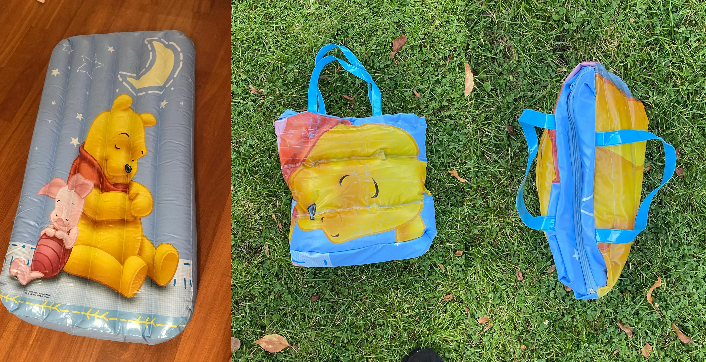
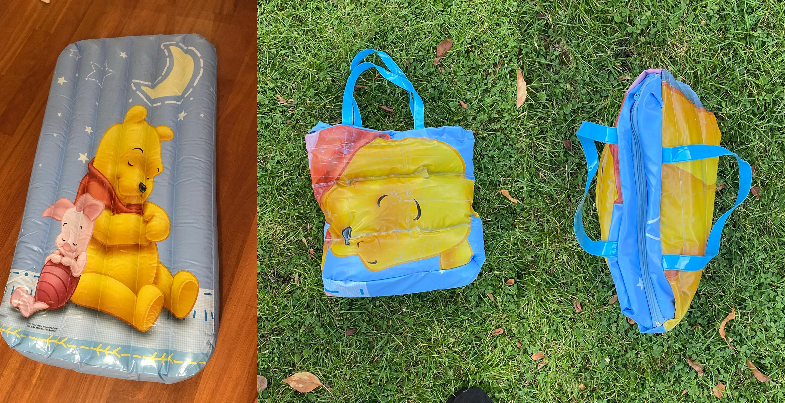

TOTAL KITSCH
Overview:
Total Kitsch es un proyecto de upcycling que transforma flotadores en desuso en bolsas tote bag únicas. Este proyecto celebra la estética kitsch mientras promueve la sostenibilidad y la reutilización creativa de materiales.
Especificaciones:
- Upcycling de materiales
- Diseño de producto manteniendo identidad
- Proceso de transformación
- Fotografía de producto
- Video documental
 
next project

next project